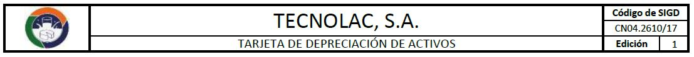

A continuación encontrará una serie de enlaces a los diferentes formatos clasificados por Área o Departamento. En cada uno de los catálogos podrá descargar los formatos que se encuentran estandarizados y autorizados por las Gerencias para los diferentes procesos dentro de Planta, según el área de su interés. Si dentro de estos catálogos no encuentra el formato que necesita o desea solicitar un formato nuevo para algún proceso ya sea operativo o adminsitrativo, comuníquese con el Encargado de Informática a la Extensión 6416 o al correo electrónico: luis.murga@tecnolac.com.gt
Cada Departamento o Área de la empresa cuenta con una serie de documentos debidamente estandarizados por el departamento de Informática y autorizados por sus respectivas Gerencias y Jefaturas. Dentro de estos documentos podemos mencionar:
Todos los formatos que estén estandarizados contarán con un encabezado, el cuál estará dividido en 3 secciones, como se muestra en la siguiente imágen:
| Administración | Gestión de Calidad | Contabilidad | Informática | Laboratorio F-Q/M-B | Mantenimiento | Producción | Recursos Humanos | Seguridad Ocupacional |
|---|---|---|---|---|---|---|---|---|
| AD | CA | CN | IT | LA | MA | PR | RH | SS |